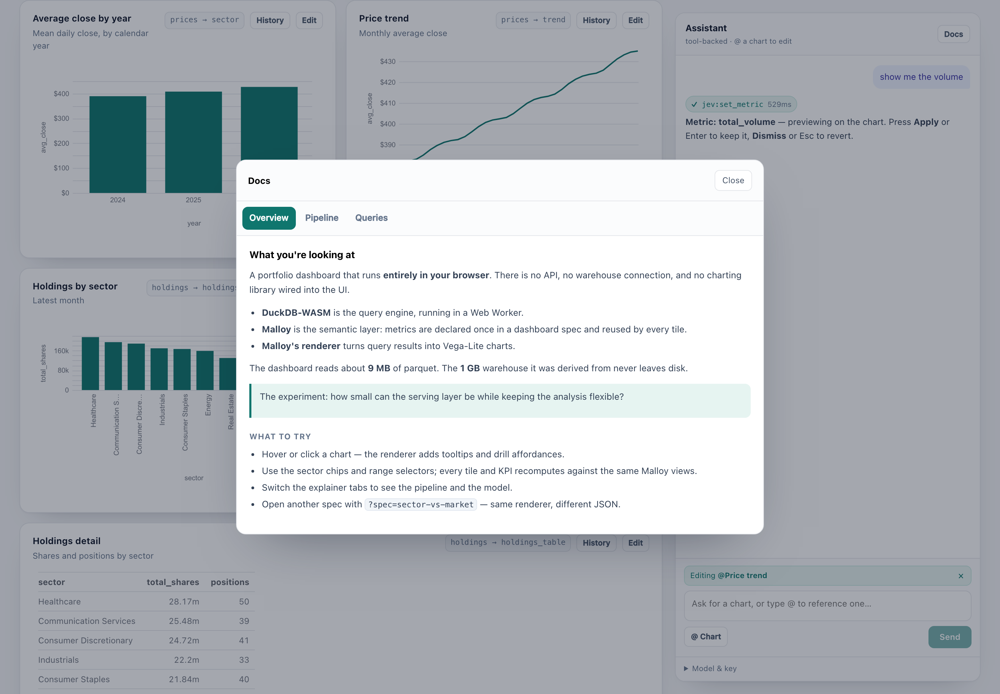
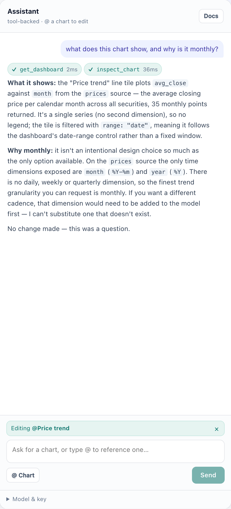
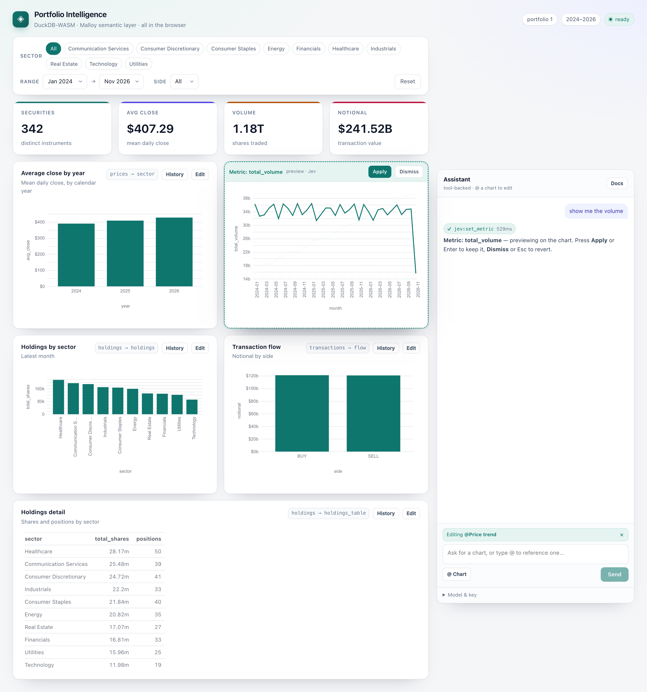
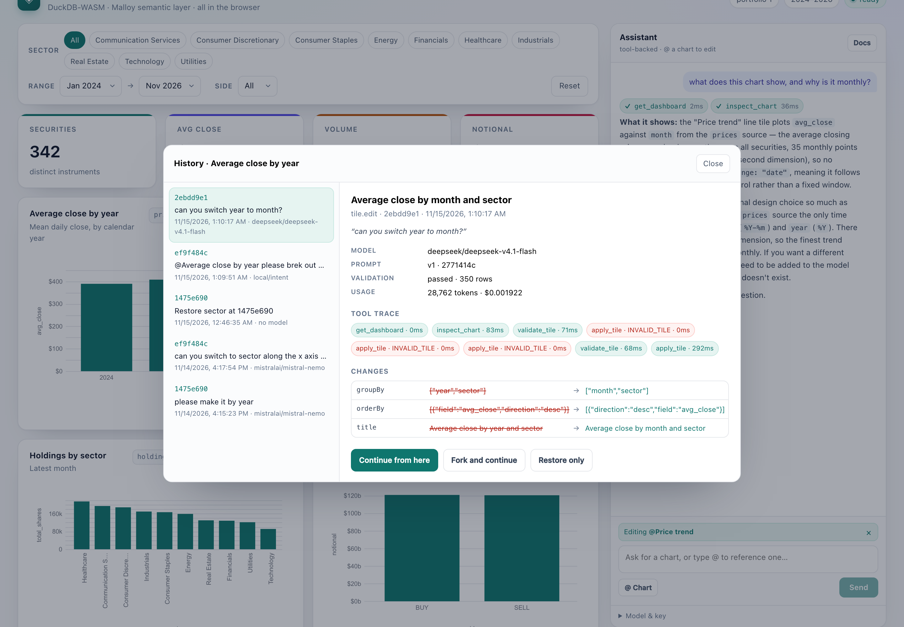

One JSON spec per dashboard, compiled to Malloy and queried in the browser. An agent edits
the dashboard through tools, and every applied edit becomes a revision you can inspect,
diff, restore or fork.
The portfolio dashboard, rendered from one spec file. The assistant answers a question about
the price trend using its tools.
1JSON file per dashboard
4chart types incl. tables
3 msmechanical edits, no model
9revisions in this dashboard's history
35/35intent cases compile & pass
Try it
The demo is the real app, built statically. Filters, KPIs and charts are live. Chart edits
apply in memory — try Edit on a card and ask for “full width” or “a line chart”.
The assistant needs an OpenRouter key; the local intent path does not.
Front end
What you can touch
Sector, date-range and side filters; every tile re-queries
Hover and legend interactions from the Malloy renderer
Edit inserts an @chart mention and attaches its context
Mechanical edits apply immediately, with an Undo toast
Not in the static build
What needs the local app
Writes to specs/ and the revision log
Restore, fork and “continue from here”
The assistant, unless you paste a key in Model & key
Static demo: edits are in memory only. The full app persists specs under
specs/ through the Vite dev server.
How it works
There is no server and no warehouse connection. The browser loads a 9 MB parquet subset and
does the querying with DuckDB-WASM; the compiler generates the Malloy model from the spec.
1SpecSources, dimensions, metrics, filters and tiles in one JSON file.
2ValidateShape, references and limits, with path-qualified errors.
3CompileSpec → Malloy model + the queries the renderer will run.
4RunDuckDB-WASM in a worker, then the Malloy renderer draws it.

Every dashboard ships with its own explainers; the Docs button opens them without leaving
the page.
In the browser
Dashboard + agent + history
A generic renderer draws the filter bar, KPIs and tiles. The chat is an assistant-ui
thread; the history dialog reads revision events. Nothing is dashboard-specific — the
renderer only knows the spec.
In the repo
Compiler + tool host + persistence
spec/compile.ts generates Malloy; agent/tools.ts hosts the
tools; the dev server persists specs/, appends
history/*.jsonl and stores content-addressed snapshots.
The semantic layer is a file
A tile names a source, dimensions and metrics — never SQL. The compiler emits the model, so
“average close by year” is a query the app can reason about, validate and preview.
specs/portfolio.jsonthe only place a dashboard lives
// one tile of five
{
"id": "sector",
"title": "Average close by year",
"chart": "bar",
"source": "prices",
"groupBy": ["year"],
"metrics": ["avg_close"],
"filter": { "range": "date" }
}
generated Malloywhat the browser runs
// dimension + measure from the catalog
source: prices is table('prices.parquet') extended {
dimension: year is
printf!('%s', strftime!(`date`, '%Y'))
measure: avg_close is close.avg()
{ # currency=usd0 }
}
prices -> by_year is {
group_by: year
aggregate: avg_close
order_by: year asc
}
npm run spec:check validates every spec and runs every generated query against
the serving parquet before a browser opens. That is also the gate the agent's writes go
through.
The agent edits through tools
The model never writes the spec. It gets get_dashboard,
inspect_chart, preview_query, validate_tile and
apply_tile; a write needs a successful validation in the same round and the
latest revision.

“What does this chart show, and why is it monthly?” — answered from the tile, the compiled
query and a preview, with no write.

An inferred edit is previewed in place — Apply, Dismiss, Enter, Esc — before it becomes a
revision.
Before the model
A deterministic fast path
Mechanical requests are recognised locally and applied in a few milliseconds. When the
phrasing is uncertain, Jev (a calibrated decision model) picks the verb — a
noul vetoes writes when the sentence is really a question.
Reads are free; writes are gated by a successful validation in the same round and the
latest dashboard revision. Rejections come back as structured errors, so the model can
retry instead of guessing.
Every edit leaves a revision
Each applied tile edit records the request, model, prompt version, validation, usage, the
ordered tool trace and a SHA-256 snapshot. Restore, fork into a new tile, or continue from
any revision — the chain stays linear and nothing is deleted.

The history dialog for one chart: five revisions, the prompt that made each one, the tool
trace including a rejected apply, and a field-level diff.
The same event log answers “why does this chart look like this?” and “can I still
reproduce it?”. history:check recompiles and re-runs every snapshot and
verifies the chain links.
Snapshots are content-addressed, so a restore is byte-identical
Forking creates a new tile with a parent link, not a second head
Restoring appends an event — the old revisions stay in the chain
Article+ — an article as a standing query
The same catalog can check journalism. Feed it a public article and Jev classifies each
sentence into a claim (event, state or thesis), maps it onto a field and a period, and the
claim is re-run over its own window.
npm run article -- <url>18 sentences · $0.001 · 0.9 s
# kind period sector published ours check
9 event ytd Energy 3.41% +8.45% · 3/10 contradicted
11 event ytd Consumer Staples 0.03% +7.16% · 4/10 confirmed
not trackable (13) — what a catalog would need to add:
1 index series not in catalog The Russell 2000 slid 1.66%…
2 no catalog sector or metric PLBL led today's gainers with 28.79%…
The finding
~25% of claims were checkable
Two daily market wraps: 24–28% of claims survived contact with a sector-level monthly
catalog. The binding constraint is coverage — no index, no commodities, no single
names — not extraction.
Each claim is checked over its own period: YTD means January to the last
month, day-level claims fall back to month-over-month. “Contradicted” means “not
reproducible at this grain”, not “the article is wrong”.
The full brief — artifact, claim taxonomy, prior art, risks and roadmap — lives with the
source. The end state: an article that keeps a ledger of its own claims, alerts when a
falsifier trips, and drafts the next edition with every sentence citing a query.
Run it
shellNode 22.18+
npm install
npm run dev # → http://localhost:5188
npm run check # types, specs and queries, intent corpus
npm run build # static bundle
Notes
What is real, what is synthetic
The data is synthetic: four parquet tables generated with DuckDB
No server: DuckDB-WASM runs in a worker; the 9 MB subset ships with the app
Persistence is the dev server writing files — no database